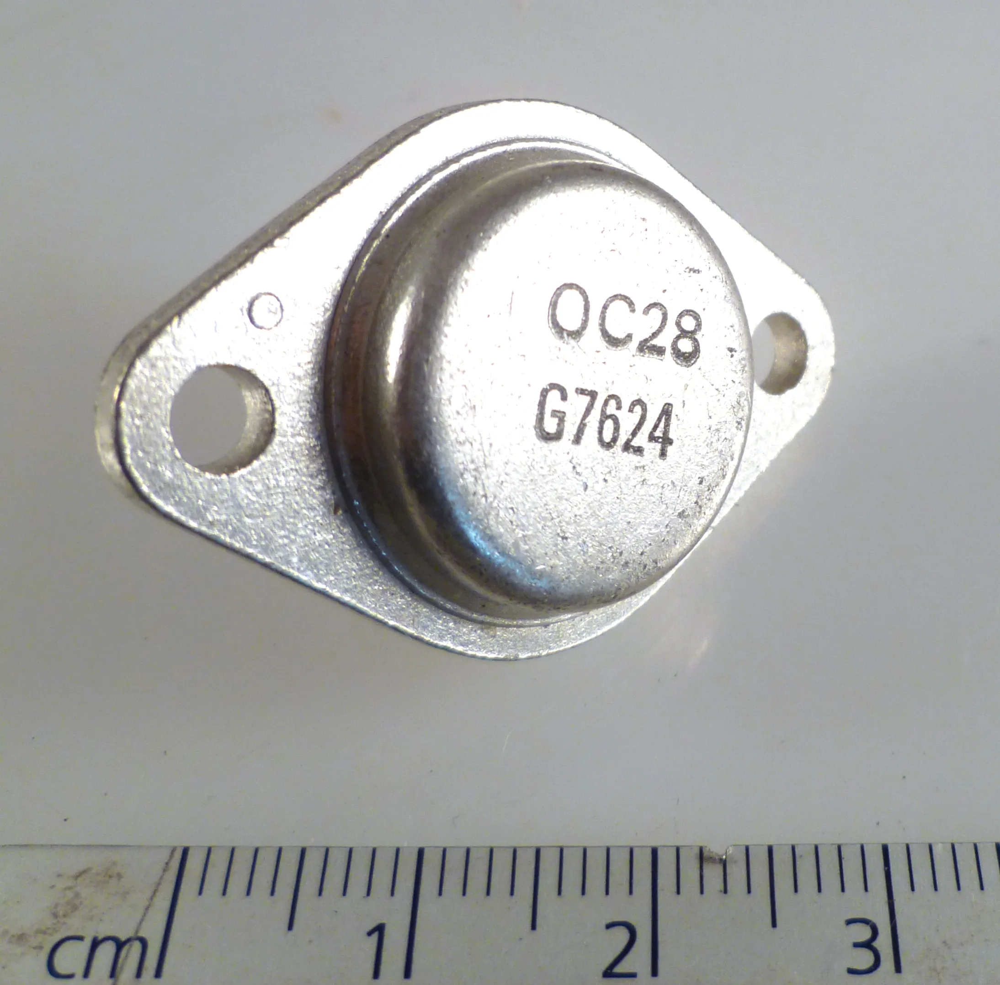
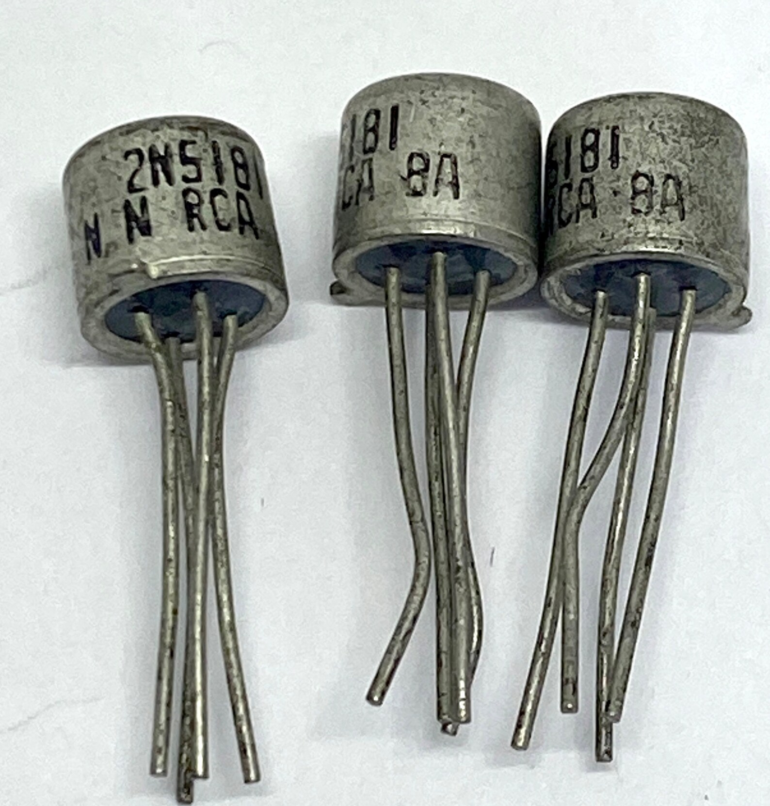
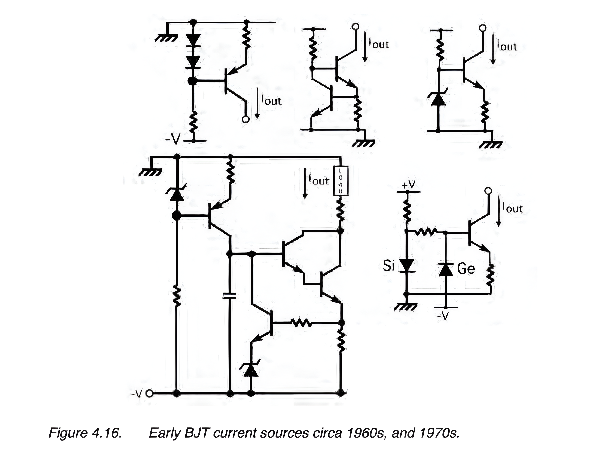
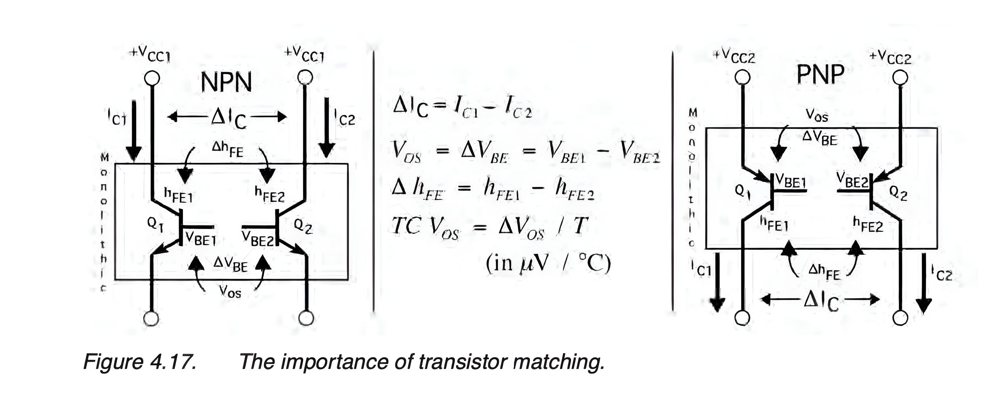
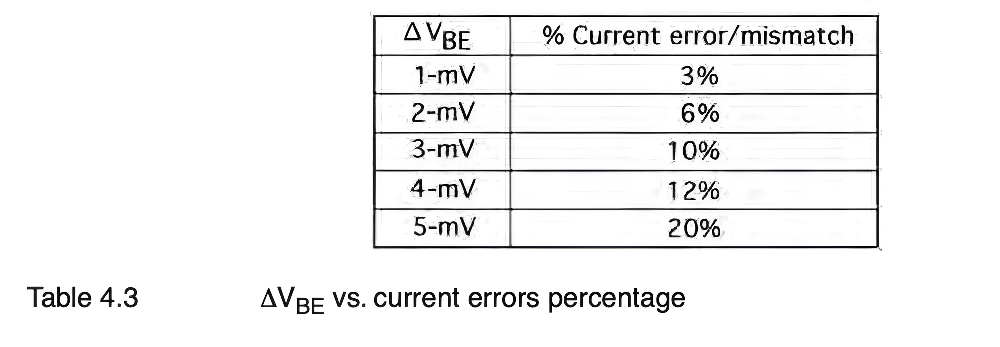
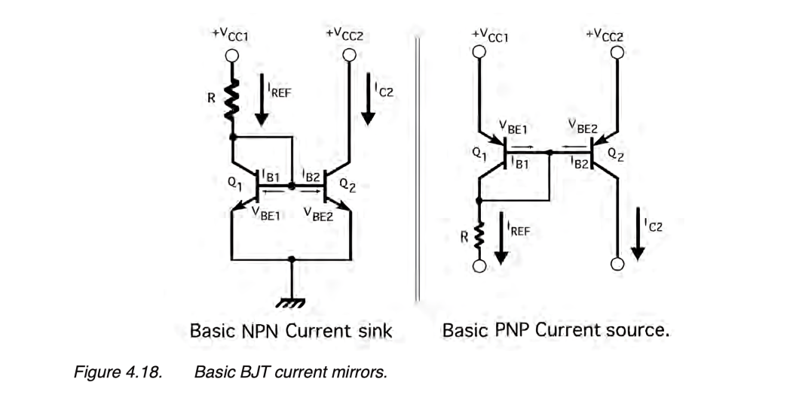
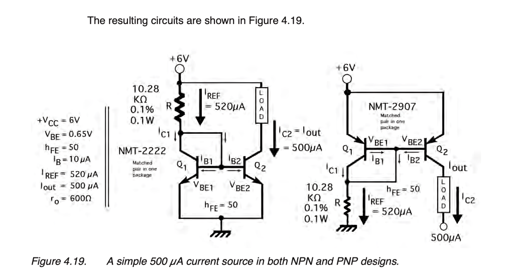

Using The BJT as Current Source#
Author : Negar Bahrampour
Contact : negarbahram03@gmail.com
Introduction#
This project examines the development of bipolar junction transistors (BJTs) as current sources, highlighting advancements from vacuum tubes to silicon technology. It focuses on achieving precision through transistor matching, thermal stability, and reliable voltage supplies, while also discussing key configurations like current mirrors and their limitations.
Historical Development of Current Sources#
1940s-50s : Early current sources used vacuum tubes.

Thermionic vacuum tubes, mostly miniature style, some with top cap connections for higher voltages
1950s : Germanium PNP transistors became popular but Because of germanium’s unpredictability —particularly its instability with temperature— these current sources were not too practical.

OC28 Germanium PNP Low Power Transistor TO3 Vintage 70’s OMA064D
1960s : Silicon NPN and PNP transistors enabled better current sources. However, these current sources were neither accurate nor repeatable, because they were built using discrete transistors, diodes, and resistors.

Lot of 3 RCA 2N5181 Silicon NPN Transistors New Old Stock Vintage 1970
Late 1960s : the silicon bipolar analog IC became a practical reality and simple current sources began to be used in their architectures for purposes of biasing and stability. Their performances far outperformed their discrete predecessors, because all of the necessary components were integrated into the chip’s design. As a result, much development focused on creating current sources for bipolar circuits between the mid- 60s and the early ’80s.

Intel C4004 processor with grey traces
1980s and Beyond : Current sources were developed for various technologies, including complementary-bipolar, analog CMOS, and gallium arsenide (GaAs) RF amplifiers.

Requirements when using BJTs for creating precision current sources#
Tightly Matched Transistors : To achieve accurate current sources, transistors must have closely matched base-emitter voltages (VBE) and current gain (hFE). Differences in VBE (ΔVBE) cause errors in current matching and it is the most critical parameter, which can be viewed collectively like an op amp’s offset voltage (VOS), between a monolithic pair of transistors used as a current source. To be clear, the ∆VBE is the difference in voltage between the two VBEs needed to equalize the two collector currents. If the transistors’ VBEs are the same and the collector voltages are the same, then the collector currents will also be the same. Actually, current source errors are exponentially proportional to the transistors’ VBEs, therefore it is very important that one begins with as closely matched devices as possible.

Monolithic Array : in a monolithic array, devices are inherently thermally matched (sharing the same package or substrate), otherwise the slightly different ground potentials, temperature differences/gradients, and overall long-term drift will quickly degrade a discrete circuit’s performance. In fact, once a current source design has been built, one should measure its long-term TC VOS stability (measured in μV/month). Ideally, one should aim for 1 μV/month or something close to that. Any accompanying resistors used should be tight tolerance (0.1% or better), low TC types (less than 50 ppm). Although using discrete transistors would appear to be more convenient and economical, this approach can be mostly discarded, other than at a feasibility or initial development phase, for lack of close matching, long-term accuracy and drift, as well as circuit repeatability. The increased performance, stability, and low drift of the monolithic dual or quad transistor array, versus using discrete transistors, far outweighs any added cost. This translates into making a reliable, successful product compared to making one that is troublesome and unsuccessful. The same holds true today and will tomorrow.

Stable, Low-noise Voltage Source: For low current requirements (i.e., less than 5 mA), a precision low-noise voltage reference may even be used. In some applications, a small electrolytic capacitor (10 μF), in parallel with a 0.01-μF ceramic disc capacitor, may be required to bypass the regulated output to the current source supply. A hash-free regulated supply is essential in all precision work.
Challenges and Configurations of BJTs as Current Sources#
Difficulty as a Two-Lead Current Source: Unlike some other semiconductor devices, BJTs can’t easily function as current sources with just two connections (leads). A two-lead current source would typically involve an input and output connection only, but BJTs require more control. For a BJT to act as an effective current source, at least three connections are typically necessary : (In some designs, four connections may be required for additional control and stabilization.)
Input Terminal: To supply the control signal.
Output Terminal: Where the controlled current flows.
Voltage Bias Point: To set the transistor’s operating point.
As a result, virtually all BJT current sources are configured as current mirrors (aka current reflectors), where an input current is mirrored at the output, in either a matched 1:1 or other ratio. This may be either a fraction or a multiple of the input, or scaled in some other manner.
Simplified Two-Transistor Current Sources: NPN and PNP Configurations#
Although various BJT current source designs originally appeared, few of them were stable or else used an excessive number of components, as shown previously in Figure 4.16. The simplest two-transistor current sources of modern times are shown in Figure 4.18A and B, which can be built using a pair of either NPN or PNP devices. Technically speaking, the NPN circuit is a mirror-sink, while the PNP circuit is a mirror-source. This is because IC2 mirrors the current in IREF, and the IC2 current is either flowing into the circuit (NPN) or out of it (PNP). In either case, the pair of transistors are assumed to have identical characteristics. The PNP version of this circuit works identically, but with all polarities and currents reversed. Of the two types, the PNP version is more commonly used.

In both current mirror circuits, Q1’s base and collector are shorted together, while the base and emitter act as a diode. The series resistor, R, provides a fixed voltage and current to Q1’s collector, as well as base current for Q1 and Q2. In the NPN circuit, because Q1’s collector and base are shorted, and its emitter is grounded, this clamps the VBE at approximately 0.65 volt above ground. The PNP circuit has its VBE at approximately 0.65 volt below VCC. Because both VBEs are assumed here to be identical, so too will be their collector currents. If Q1’s VBE is now impressed across transistor Q2, then theoretically the reference current, IREF, will be mirrored (duplicated) by Q2.
given:
$\( I_{B1} = I_{B2} \)\(
\)\( V_{BE1} = V_{BE2} \)\(
\)\( \beta_{Q1} = \beta_{Q2} \)\(
then to determine the reference current, IREF in either NPN or PNP circuit:
\)\(
I_{REF} = \left( \frac{V_{CC1} - V_{BE1}}{R} \right)
\)\(
Also, because the reference current is composed of both Q1’s collector current and both base currents, then:
\)\(
I_{R E F} = I_{C l} + 2 I_{B}
\)\(
Therefore, the output current, IC2, is determined by:
\)\(
I_{O U T} = I_{C 2} = \left(\frac{\beta}{\beta + 2}\right)\left(\frac{V_{C C 1} - V_{B E 1}}{R}\right)
\)\(
\)\(
\therefore I_{C1} \cong I_{C2}
\)\(
The output resistance (ro) for this particular configuration is given by the internal col- lector-to-emitter resistance (rce) of Q2, derived from the BJT’s small-signal model:
\)\( r_{o} = r_{ce2} \)\(
where rce is determined by:
\)\(
r_{ce2} = \frac{V_{CE2}}{I_{C2}}
\)$
Design of a Current Sources#
Consider designing two simple 500-μA current sources using NPN and PNP transistors. The specifications include:
Transistors: NMT-2222 (NPN, 2N2222 type) and NMT-2907 (PNP, 2N2907 type), both in a SOT-6 package.
Supply Voltage (+VCC): 6 volts
VBE: 0.65 volts
hFE (current gain): 50
Assuming identical base currents, gains, and base-to-emitter voltages for both transistors, the circuit behavior can be analyzed. then: $\( \begin{array}{l} V_{CC1} = V_{CC2} = 6 \, \text{V} \\ V_{BE1} = V_{BE2} = 0.65 \, \text{V} \\ \beta_{Q1} = \beta_{Q2} = 50 \\ I_{B1} = I_{B2} = 10 \, \mu \text{A} \\ I_{OUT} = 500 \, \mu \text{A} \end{array} \)$ 
The circuit is a little deceptive, because at first glance one would deduce that IREF is exactly equal to IOUT, but this is a little misleading. One should remember that there is a difference between IREF and IC1. After all, IREF is the entire reference current coming through the resistor (R), whereas IC1 is that part of the reference current flowing into Q1’s collector. The rest makes up the two base currents flowing into the bases of Q1 and Q2. This was defined previously in equation 4.36. As a result, the reference cur- rent should not be set at 500 μA, but slightly higher at 520 μA (to accommodate the two times IB). This will result in an output current of 500 μA, as shown in Figure 4.19. Although this current source is one of the simplest (three components), not to mention quite popular, its regulation is soft and its output resistance is likewise poor at less than 1 KΩ. Others we will review shortly do a much better job in both regards. Nonetheless, if you want a simple, three-component current source, this may be all you need for your application. Also, this current source is often used in conjunction with additional mirrors, which can either multiply or divide its output current (IC2), or even invert it.
Conclusion#
This project explored the use of bipolar junction transistors (BJTs) as current sources, tracing their evolution from vacuum tubes to modern silicon technology. The analysis emphasized the challenges of achieving precision and stability, such as matching transistor characteristics and managing temperature effects. Various configurations, including current mirrors, were discussed, highlighting their limitations and practical applications.
Sources#
Current Sources and Voltage References: A Design Reference for Electronics Engineers 1st Edition by Linden T. Harrison